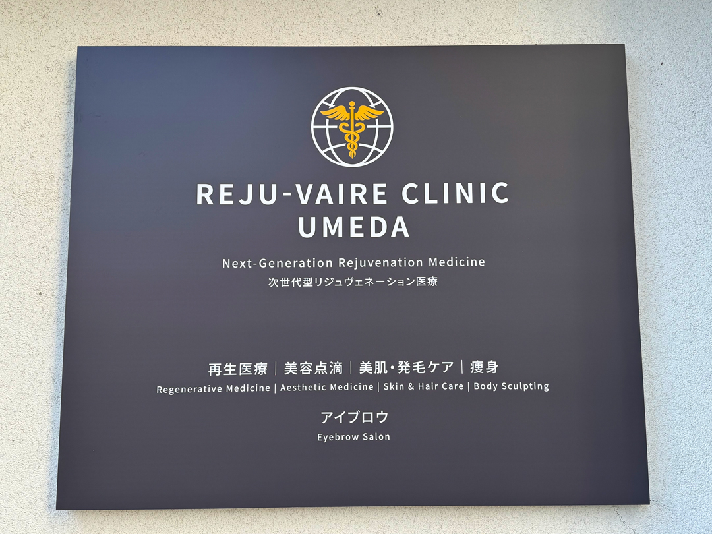

Muku
Muku
01
再生医療事業推進
Regenerative Medicine
リジュヴェールクリニックと連携し、幹細胞・エクソソームを用いた再生医療の社会実装を推進。安全性と専門性を最優先に、医師および医療機関と適切な関係性を築きながら事業を構築しています。
純粋さ。誠実さ。
そして、まだ何色にも染まっていない、
無限の可能性。
私たちは「親への感謝」こそが、人と社会の原点であると考えています。
その原点を忘れることなく、医療・健康・再生医療という領域を通じて、
人から人へ、世代から世代へ、
価値と恩が循環する構造を創り出していきます。
生命が本来備える再生力を活性化させる科学。
それは単なる治療や美容の枠を超え、
QOL（Quality of Life）の向上、
さらには人生設計そのものを拡張する領域です。
原点を、事業へ。
志を、構造へ。
それが、Mukuの使命です。
医療イノベーションを軸に、
世代を超えて価値が循環する
国際的エコシステムの構築を目指します。
再生医療と次世代の技術を軸に、3つの事業領域で医療価値を社会へ届けています。
リジュヴェールクリニックと連携し、幹細胞・エクソソームを用いた再生医療の社会実装を推進。安全性と専門性を最優先に、医師および医療機関と適切な関係性を築きながら事業を構築しています。
GLP-1／GIP受容体作動薬を用いた医療痩身プログラム『Re-JALO』を医療機関へ導入支援。
エアーダーマ・ミラクルショット等の最先端美容機器の取扱・提供。次世代の美容導入療法を支えます。
Mukuは、信頼できる医療機関と連携することで、医師の管理下にて安全に治療を提供しています。

「細胞が持つ『再生の力』を人へ、
未来へ、世界へ」
再生医療を専門とする次世代型クリニック。Mukuはこのリジュヴェールクリニック梅田院と提携し、医師管理下での安全な医療提供体制を構築しています。
| 所在地 | 〒530-0002 大阪府大阪市北区曽根崎新地1-7-30 |
|---|---|
| 電話 | 06-7777-6201 |
| 診察形態 | 完全予約制／オンライン診察対応 |
| 公式サイト | reju-vaire-clinic.jp ↗ |